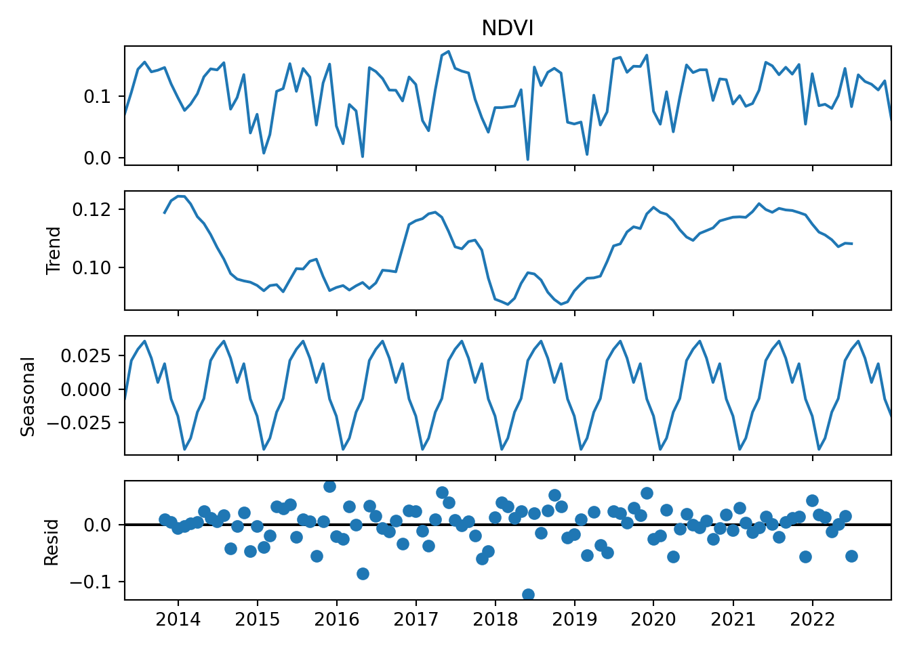
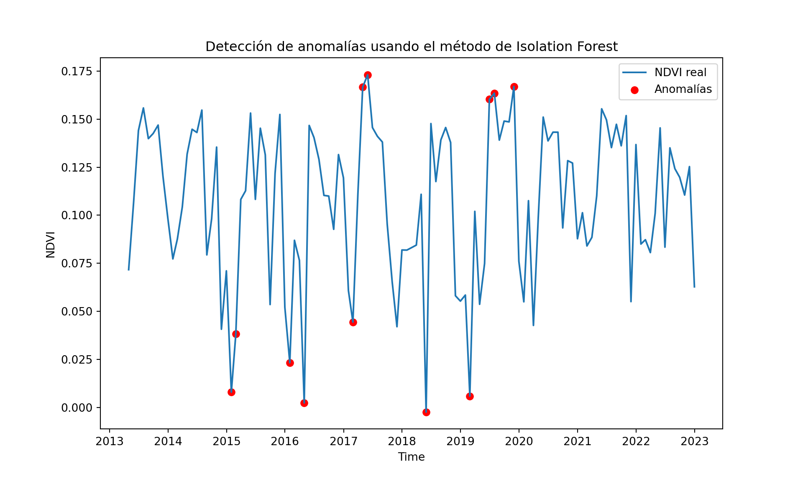
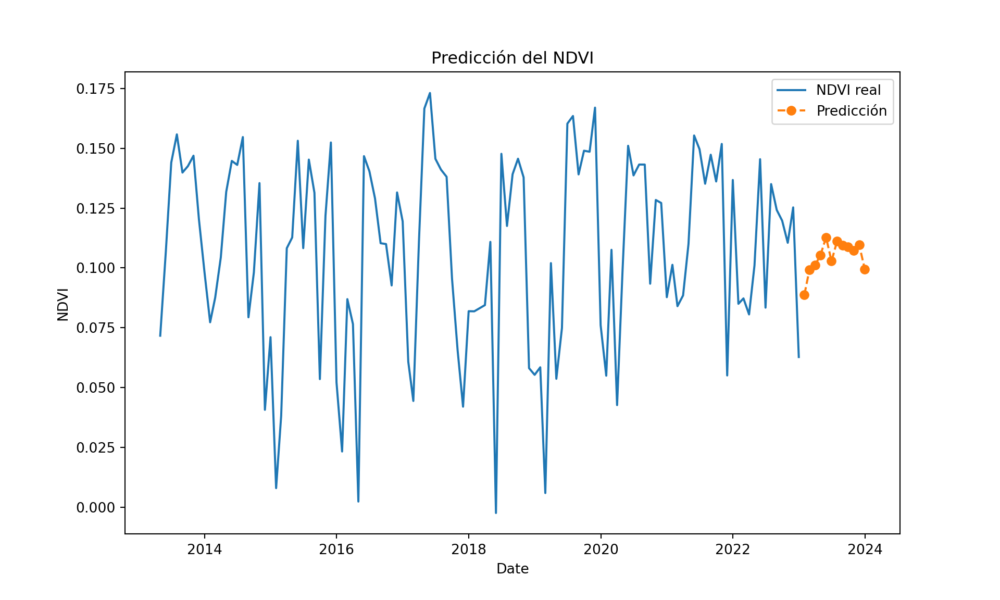

import ee
import geemap
import pandas as pd
import matplotlib.pyplot as plt
# Trigger the authentication flow.
ee.Authenticate()True# Initialize the library.
ee.Initialize(project='hazel-env-396707')Ramon David P. Lanyau
May 27, 2025
En este material se explica cómo acceder a las imágenes satelitales alojadas en Google Earth Engine, una plataforma poderosa que permite el análisis geoespacial a gran escala y el procesamiento eficiente de grandes volúmenes de datos de observación de la Tierra. Se calcula el Índice Vegetal de Diferencia Normalizada (NDVI), un indicador crucial para estimar la salud vegetal en un punto específico durante el período 2013-2022. Luego realizamos análisis de detección de anomalías de esa serie de tiempo, lo cual es importante para identificar eventos inusuales o cambios significativos en la salud de la vegetación que podrían indicar estrés, enfermedad o perturbaciones. Finalmente, emplearemos un modelo ARIMA para predecir cómo será la serie de tiempo de NDVI en ese punto para los siguientes 12 meses, lo que resulta valioso para la planificación agrícola, la gestión de recursos naturales y la alerta temprana de posibles cambios en la vegetación.
El modelo ARIMA (Autoregressive Integrated Moving Average) es un modelo estadístico utilizado para analizar y predecir series de tiempo. Se basa en la idea de que los valores futuros de una variable pueden explicarse por sus valores pasados y por los errores de predicción anteriores. El modelo ARIMA se define por tres componentes principales:
AR (Autoregresivo): Utiliza una combinación lineal de los valores pasados de la serie para predecir el valor actual. El orden de AR (p) indica cuántos valores pasados se incluyen en el modelo.
I (Integrado): Se aplica una diferenciación a la serie de tiempo para hacerla estacionaria (es decir, con media y varianza constantes a lo largo del tiempo). El orden de integración (d) indica cuántas veces se diferencia la serie.
MA (Promedio Móvil): Utiliza una combinación lineal de los errores de predicción pasados para predecir el valor actual. El orden de MA (q) indica cuántos errores pasados se incluyen en el modelo.
En resumen, un modelo ARIMA(p, d, q) busca patrones en los datos históricos de una serie de tiempo para realizar pronósticos futuros, teniendo en cuenta tanto la dependencia de los valores pasados como los errores de predicción anteriores.
import ee
import geemap
import pandas as pd
import matplotlib.pyplot as plt
# Trigger the authentication flow.
ee.Authenticate()TrueEn este código mostraremos la media de la coleccion de imágenes Landsat (periodo 2013-2022) ‘LANDSAT/LC08/C02/T1_L2’, y la visualizaremos en color verdadero. Esta colección es la que será empleada para calcular el índice de vegetación normalizado (NDVI).
imagen=ee.ImageCollection('LANDSAT/LC08/C02/T1_L2').filterDate('2013-01-01', '2022-12-31').median()
# Obtiene los nombres de las bandas como una lista de ee.String
band_names_ee_list = imagen.bandNames()
# Para mostrar los nombres de las bandas en la consola (esto se ejecutará en Python)
band_names = band_names_ee_list.getInfo()
print(band_names)['SR_B1', 'SR_B2', 'SR_B3', 'SR_B4', 'SR_B5', 'SR_B6', 'SR_B7', 'SR_QA_AEROSOL', 'ST_B10', 'ST_ATRAN', 'ST_CDIST', 'ST_DRAD', 'ST_EMIS', 'ST_EMSD', 'ST_QA', 'ST_TRAD', 'ST_URAD', 'QA_PIXEL', 'QA_RADSAT']# Define the visualization parameters.
image_viz_params = {
'bands': ['SR_B5', 'SR_B4', 'SR_B3'],
'min': 1,
'max': 25455 ,
}
# Define a map centered on San Francisco Bay.
map_l8 = geemap.Map(center=[37.385348,-122.084051], zoom=5)
# Add the image layer to the map and display it.
map_l8.add_layer(imagen,image_viz_params, 'falso color')
map_l8# Define the satellite imagery dataset (e.g., Landsat 8)
dataset = ee.ImageCollection('LANDSAT/LC08/C02/T1_L2')
# Define the location of interest (e.g., a point or a polygon)
location = ee.Geometry.Point([-122.084051, 37.385348]) # Mountain View, CA
# Filter the dataset by location and date range
filtered_dataset = dataset.filterBounds(location).filterDate('2013-01-01', '2022-12-31')Esta función de NDVI creada será iterada con la función map en cada imagen de la colección de imágenes Landsat. El NDVI será calculado a partir de la diferencia de la Banda 5 (región del infrarojo cercano) - Banda 4 (Región del rojo)
# Define a function to calculate NDVI
def calculate_ndvi(image):
ndvi = image.normalizedDifference(['SR_B5', 'SR_B4']).rename('NDVI')
return image.addBands(ndvi)
# Map the NDVI calculation function over the filtered dataset
ndvi_dataset = filtered_dataset.map(calculate_ndvi)
# Define the visualization parameters.
viz = {
'bands': ['NDVI'],
'min': 0,
'max': 0.25,
}# Get the time series data for the location
time_series_data = ndvi_dataset.getRegion(location, 30).getInfo()
# Extract the time property separately and format it
time_values = [item[0] for item in time_series_data[1:]]
time_values = pd.to_datetime([item.split('_')[-1] for item in time_values], format='%Y%m%d')
# Create a pandas DataFrame from the time series data (excluding time)
df = pd.DataFrame([item[1:] for item in time_series_data[1:]], columns=time_series_data[0][1:])
df['time'] = time_valuesEn este bloque de código , establecemos a la columa ‘Date’ como el índice del DataFrame. Se imputan los datos faltantes (Nan) con la media de toda la serie de tiempo. Y por último se agrega la serie de tiempo a media mensual, estableciendo como fecha de referencia la última fecha de cada mes (‘ME’: Month End).
En este código se realiza la descomposición de la serie de tiempo en sus componentes, tendencia, estacionalidad y residuo, con el método aditivo. Lo que permitirá una mejor visualización de las características de esta serie de tiempo.
# Seasonal Decompose
ndvi_series_filled = ndvi_series.fillna(ndvi_series['NDVI'].mean())
decomposition = sm.tsa.seasonal_decompose(ndvi_series_filled['NDVI'], model='additive')
decomposition.plot()
Este código toma una serie de tiempo de NDVI, ajusta un modelo ARIMA(5, 1, 0) a estos datos, pronostica los valores de NDVI para los próximos 12 períodos y luego imprime tanto los valores pronosticados como un resumen estadístico del modelo ajustado.
# Apply ARIMA for forecasting
arima_model = sm.tsa.ARIMA(ndvi_series['NDVI'], order=(5,1,0))
arima_result = arima_model.fit()
# Forecast the next 12 months
forecast = arima_result.forecast(steps=12)
print(forecast)2023-01-31 0.090206
2023-02-28 0.093894
2023-03-31 0.088436
2023-04-30 0.093845
2023-05-31 0.101646
2023-06-30 0.091173
2023-07-31 0.093757
2023-08-31 0.095121
2023-09-30 0.092268
2023-10-31 0.092873
2023-11-30 0.094984
2023-12-31 0.093331
Freq: ME, Name: predicted_mean, dtype: float64 SARIMAX Results
==============================================================================
Dep. Variable: NDVI No. Observations: 117
Model: ARIMA(5, 1, 0) Log Likelihood 203.961
Date: mar., 27 may. 2025 AIC -395.922
Time: 16:52:00 BIC -379.401
Sample: 04-30-2013 HQIC -389.216
- 12-31-2022
Covariance Type: opg
==============================================================================
coef std err z P>|z| [0.025 0.975]
------------------------------------------------------------------------------
ar.L1 -0.4438 0.091 -4.873 0.000 -0.622 -0.265
ar.L2 -0.2303 0.122 -1.891 0.059 -0.469 0.008
ar.L3 -0.0402 0.123 -0.328 0.743 -0.280 0.200
ar.L4 -0.1265 0.114 -1.109 0.268 -0.350 0.097
ar.L5 -0.2009 0.101 -1.983 0.047 -0.400 -0.002
sigma2 0.0017 0.000 6.767 0.000 0.001 0.002
===================================================================================
Ljung-Box (L1) (Q): 0.17 Jarque-Bera (JB): 0.90
Prob(Q): 0.68 Prob(JB): 0.64
Heteroskedasticity (H): 0.66 Skew: -0.20
Prob(H) (two-sided): 0.21 Kurtosis: 2.84
===================================================================================
Warnings:
[1] Covariance matrix calculated using the outer product of gradients (complex-step).Detección de Anomalías en Serie de Tiempo NDVI con Isolation Forest. Este código utiliza la técnica de Isolation Forest para identificar anomalías (valores atípicos) en una serie de tiempo de NDVI. Primero, se imputan los valores faltantes (NaN) en la columna ‘NDVI’ de la serie ndvi_series utilizando la media. Luego, se entrena un modelo de Isolation Forest con una tasa de contaminación del 10% para detectar las anomalías. Finalmente, se imprimen los valores considerados como anomalías y se genera un gráfico de la serie de tiempo con las anomalías resaltadas en rojo.
from sklearn.ensemble import IsolationForest
import numpy as np
import pandas as pd
from sklearn.impute import SimpleImputer
import matplotlib.pyplot as plt
# Crear un imputador para reemplazar NaN con la media
imputer = SimpleImputer(strategy='mean')
# Aplicar la imputación a la columna 'NDVI'
ndvi_values_imputed = imputer.fit_transform(ndvi_series['NDVI'].values.reshape(-1, 1))
# Aplicar Isolation Forest para detección de anomalías
X = ndvi_values_imputed
model = IsolationForest(contamination=0.1)
model.fit(X)IsolationForest(contamination=0.1)In a Jupyter environment, please rerun this cell to show the HTML representation or trust the notebook.
IsolationForest(contamination=0.1)
anomalies = model.predict(X)
# Detectar anomalías (outliers)
outliers = X[anomalies == -1]
print(outliers)[[ 0.00795261]
[ 0.03819191]
[ 0.02326098]
[ 0.00233433]
[ 0.04438574]
[ 0.16662213]
[ 0.17310808]
[-0.00244651]
[ 0.00589421]
[ 0.16030437]
[ 0.16349427]
[ 0.16698799]]# Plot the data con anomalías resaltadas
plt.figure(figsize=(10, 6))
plt.plot(ndvi_series.index, ndvi_values_imputed, label='NDVI real')
plt.scatter(ndvi_series.index[anomalies == -1], outliers, color='red', label='Anomalías')
plt.title('Detección de anomalías usando el método de Isolation Forest')
plt.xlabel('Time')
plt.ylabel('NDVI')
plt.legend()
plt.show()
El código toma una serie de tiempo de NDVI, previamente procesada para imputar valores faltantes. Utiliza la función auto_arima de la biblioteca pmdarima para encontrar automáticamente el mejor modelo ARIMA que se ajuste a los datos, considerando la posible estacionalidad con un período de 12 (asumiendo datos mensuales). Una vez que el modelo óptimo es identificado y ajustado, se utiliza para predecir los valores de NDVI para los próximos 12 períodos futuros. Finalmente, el código genera un gráfico que muestra la serie de tiempo real junto con los valores predichos para los siguientes 12 meses, facilitando la visualización del pronóstico.
import pmdarima as pm
import pandas as pd # Asegúrate de que pandas esté importado si aún no lo está
import matplotlib.pyplot as plt # Asegúrate de que matplotlib esté importado
# Asumiendo que 'ndvi_values_imputed' fue creado en el chunk anterior
# y contiene la serie 'NDVI' con los NaN imputados con la media
# Auto ARIMA model
auto_arima_model = pm.auto_arima(ndvi_values_imputed, seasonal=True, m=12)
# Forecast future values
forecast = auto_arima_model.predict(n_periods=12)
forecast_dates = [ndvi_series.index[-1] + pd.DateOffset(months=i) for i in range(1, 13)]
# Plot the forecasted values
plt.figure(figsize=(10, 6))
plt.plot(ndvi_series.index, ndvi_values_imputed, label='NDVI real')
plt.plot(forecast_dates, forecast, label='Predicción', linestyle='--', marker='o')
plt.legend()
plt.title('Predicción del NDVI')
plt.xlabel('Date')
plt.ylabel('NDVI')
plt.show()